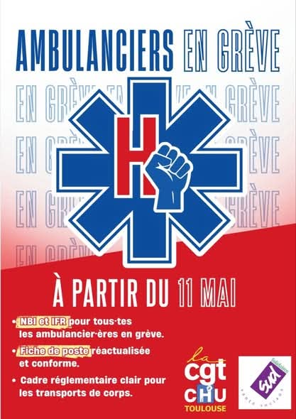
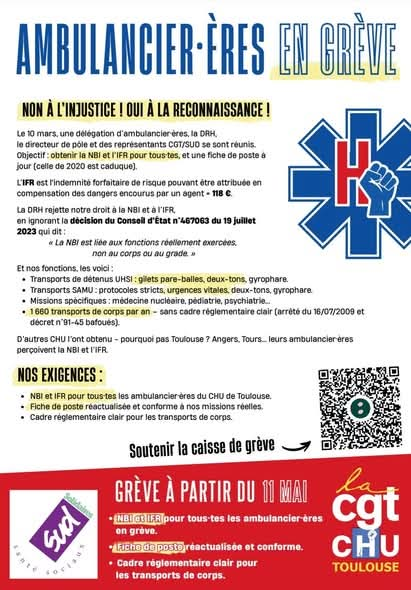

Qui Sommes Nous ? [Cliquez pour lire]
Pourquoi nous sommes en grève ?
Face au mépris de la direction et à l'absence de reconnaissance de nos fonctions réelles, les ambulanciers du CHU de Toulouse se mobilisent. Nous ne sommes pas de simples transporteurs, nous sommes des acteurs de soins à part entière.
Octroi de la NBI & IFR
Attribution de la Nouvelle Bonification Indiciaire et de l'Indemnité Forfaitaire de Risque pour l'ensemble des agents, conformément à la décision du Conseil d'État n°467063.
Fiche de Poste
Réactualisation immédiate de la fiche de poste pour qu'elle soit conforme à nos missions réelles (UHSI, SAMU, Médecine nucléaire, Pédiatrie, Psychiatrie).
Consulter la fiche de poste actuelle (A0055)
Transport de Corps
Mise en place d'un cadre réglementaire clair et digne pour les plus de 1600 transports de corps effectués chaque année.
Équité Inter-CHU
Pourquoi pas à Toulouse ? Les ambulanciers d'Angers et de Tours perçoivent déjà ces indemnités. Stop à l'injustice locale !
Soutenez la Caisse de Grève
Aidez les ambulanciers en lutte à tenir dans la durée. Chaque don compte pour compenser les pertes de salaire et financer notre combat.
Je participe à la cagnotte LeetchiCommuniqués de Presse
Communiqué du 11 Mai 2026
Appel à la grève illimitée, présentation du mouvement et détail de nos revendications (NBI, IFR, fiche de poste).
Lire le communiquéCommuniqué du 14 Mai 2026
Bilan des premières journées de mobilisation, poursuite du mouvement et état de la situation avec la direction.
Lire le communiquéCommuniqué du 27 Mai 2026
Poursuite du mouvement. Les agents sont déterminés face à une direction mutique.
Lire le communiquéRevue de Presse
Ambulanciers hospitaliers en grève au CHU de Toulouse
Le combat des ambulanciers du CHU de Toulouse.
Lire l'articleDes activités particulières et complexes
Reportage sur la grève des ambulanciers du CHU de Toulouse et la complexité de leurs missions.
Lire l'articleGrève des ambulanciers du CHU de Toulouse
Dossier sur la mobilisation et les revendications du personnel ambulancier.
Lire l'articleLes ambulanciers du CHU de Toulouse en grève
La mobilisation toulousaine s'exporte et fait parler d'elle au-delà de la région.
Lire l'article"Toujours plus, sans rétribution", les ambulanciers du CHU de Toulouse entament leur deuxième semaine de grève
Les ambulanciers du CHU de Toulouse poursuivent leur mobilisation. Retrouvez l'article original sur ICI Occitanie.
Lire l'article complet (PDF)En grève, les ambulanciers du CHU de Toulouse ralentissent les sorties des véhicules
"On transporte des êtres vivants, pas des colis" : les ambulanciers du CHU de Toulouse ont entamé une grève illimitée. Ils dénoncent un manque de reconnaissance et réclament l'octroi de la NBI.
Lire l'article completUn "glissement de tâches" dénoncé par les salariés en lutte
Les ambulanciers confirment qu'ils exécutent des tâches parfois complexes, annexes à la fiche de poste initiale. Transporter des corps à la chambre mortuaire, ils l'ont toujours fait mais réclament un cadre légal.
Lire l'article completGrève illimitée entamée par les ambulanciers en lutte
Le mouvement a débuté ce lundi 11 mai. Les agents réclament une revalorisation de leurs missions et l'équité avec les autres CHU de France qui perçoivent déjà les primes demandées.
Lire le dossierDes activités particulières et complexes qu’il faut revaloriser
Sud alerte sur la rémunération des contractuels et le décalage entre les missions réelles sur le terrain et la reconnaissance administrative actuelle.
Lire l'article completLes ambulanciers du CHU réclament la NBI et une revalorisation de leurs missions
Dossier complet sur les revendications des ambulanciers en lutte. Pourquoi le mouvement s'inscrit dans une démarche nationale de reconnaissance des métiers de l'urgence.
Consulter le dossier« Toujours plus, sans rétribution » : les ambulanciers du CHU de Toulouse entament leur deuxième semaine de grève
Malgré l'absence de réponse concrète de la direction, le mouvement tient bon. Les ambulanciers du CHU de Toulouse entament leur deuxième semaine de grève illimitée et réaffirment leurs revendications.
Reportages TV & Médias
France 3 Occitanie
France 3 Occitanie
La Dépêche
Radio 100%
Révolution Permanente Toulouse
CGT Toulouse
Mme la Députée Stambach-Terrenoir
NRJ Toulouse
RTL
Révolution Permanente
Reportage
Reportage
Reportage
Reportage
Reportage
Vidéos de la mobilisation
Retrouvez toutes nos vidéos de mobilisation sur notre chaîne YouTube :
Journal de Mobilisation


.jpeg)

.jpeg)
.jpeg)


.jpeg)


Actions et rassemblements du 28 Mai.


.jpeg)
.jpeg)
.jpeg)


.jpeg)
.jpeg)

.jpeg)
.jpeg)
.jpeg)
.jpeg)
.jpeg)

.jpeg)


Actions et rassemblements du 26 Mai.


Actions et rassemblements du 22 Mai.


Actions et rassemblements du 21 Mai.

.jpeg)
.jpeg)
Actions et rassemblements du 20 Mai.

.jpeg)

Actions et rassemblements du 19 Mai.


.jpeg)

.jpeg)
.jpeg)


Actions et rassemblements du 18 Mai.
Actions et rassemblements du 13 Mai.

Le mouvement prend de l'ampleur le 12 Mai.


Lancement historique de la grève illimitée.
Vos témoignages de soutien
Je constate que les choses ont encore du mal à évoluer sur ce service qui mérite une organisation vraiment précise et une reconnaissance des agents . J’ai connu vos conditions de travail , les difficultés , le management et autres .
Je ne regrette pas mon passage au sein du service et je ne regrette pas d’avoir exercé à vos côtés et non au-dessus de vous ....
Voir plus
Force à vous ! Nous avons besoin de vous
ndrea Blanc il y a 7 heuresMerci à mes collègues. Ne lâchez pas.
Christelle Rosenblum il y a un joursoutien du syndicat cgt CHU Rangueil/Larrey.
Anonyme il y a un jour (modifié)Force à vous ! J'espère que vous arriverez à faire entendre votre voix
Yann Lemaire il y a 6 joursTout mon soutien, ne lâchez rien ! 💪Gabrielle de RP
Gabrielle Coux il y a 6 joursbon courage à vous tous ! tenez bon !
fanette et remi lipatoff il y a 6 joursTout mon soutien ! C'est la moindre des exigences.
Hadrien Clouet il y a 14 joursVous avez bien raison de relever la tête ! Lâchez rien !
Axel RENOUX 28 Mai 2026 7h00Soutien à votre grève, tenez bon, courage !!!
GéraldineVous êtes au top, merci pour votre professionnalisme. Vous méritez vos revendications et plus encore.
Alicia Gabbani Aujourd'huiNous vivons un moment de l’histoire où certains dirigeants pensent qu’on peut s’assoir sur le droit… Vous leur montrez que non et nous vous y aidons…
Annie ROUET il y a 6 heuresParticipation de 500 euros de la SECTION sud du chu de Toulouse
Victor Alava il y a 7 joursBravo les collègues, avec vous .
isabelle Prono il y a 7 joursMerci à nos héros de l'ombre de répondre présent, malgré leurs conditions de travail et l'absence de reconnaissance 👏🏻❤️
Oceane DELORME il y a 7 joursForce et honneur .
Lafritte Romain il y a un moisSoyez forts et solidaires 💪
Nelly Taxi SirvenNos Soutiens
Un immense merci aux humoristes soignants pour leur soutien :
Caroline Estremo, JBinobile, Nathan Neige, Guillaume Goux, Hassan de Monaco
Un grand merci également pour le soutien de :
Le Personnel soignant (Internes, Infirmières, Aides soignantes, Brancardiers) et les équipes du SAMU des CHU de Toulouse, ainsi que les Ambulanciers des CHU de Montpellier, Tours et Angers.
Le Tract de Mobilisation
Retrouvez l'intégralité de nos revendications et de l'appel à la grève ci-dessous :


{kind=link}
Nous Contacter
Une question ? Une proposition d'interview ou un message de soutien privé ? N'hésitez pas à nous écrire.